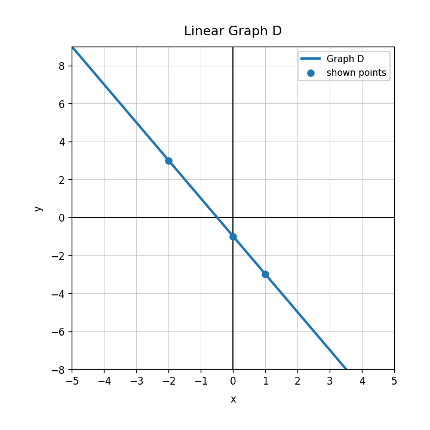
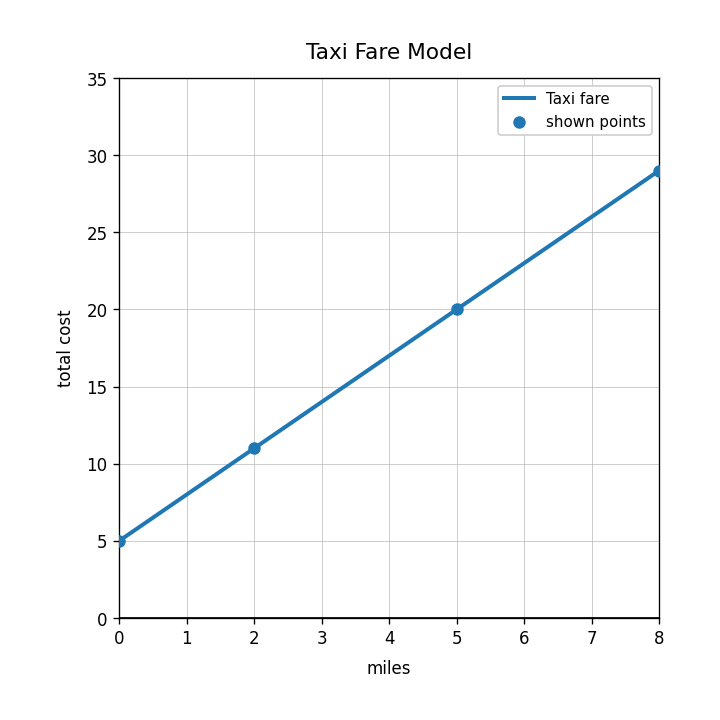
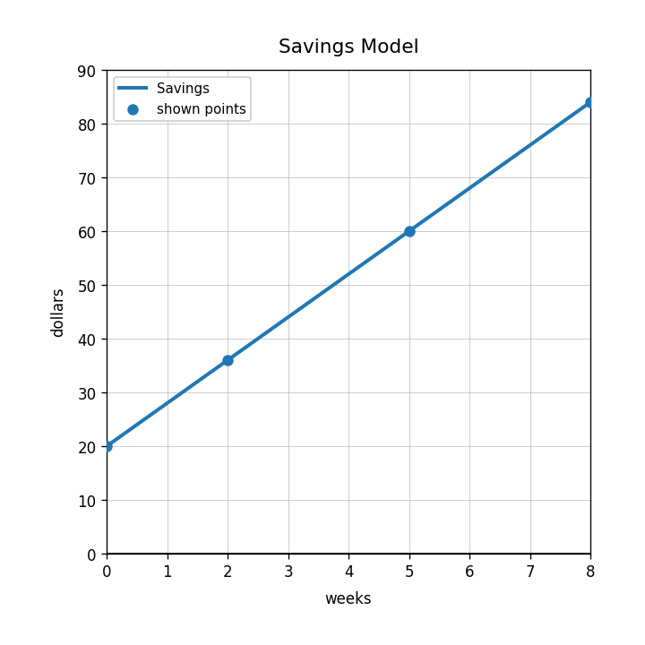
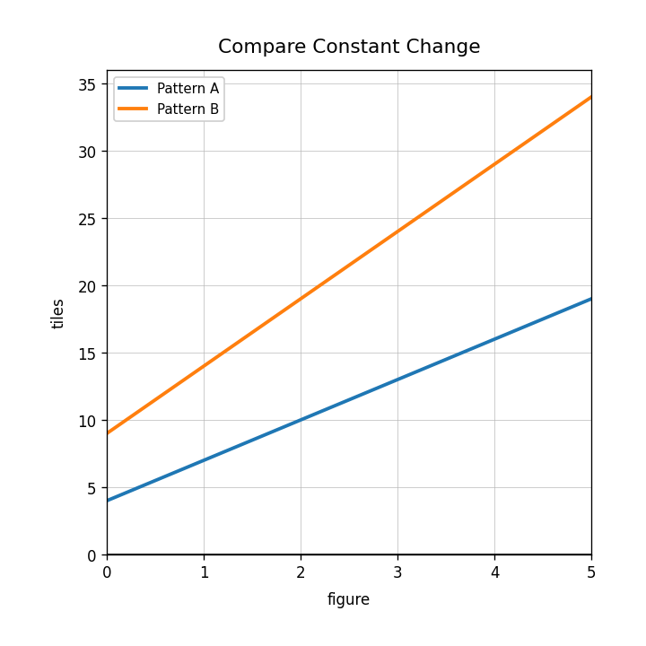

Extra Practice 2.3.4
Extra Practice 4 — Final Readiness Spiral
- Current focus: Unit 2.3 — Writing Linear Equations
- Main spiral: Unit 1.3 — Function Families
- Earlier readiness spiral: Unit 0B.3 — Linear Patterns and Rate of Change
- Current section: 4 questions — DoK 1, DoK 2, DoK 3, DoK 4
- Main spiral: 8 questions — 4 DoK 1, 2 DoK 2, 1 DoK 3, 1 DoK 4
- Earlier readiness spiral: 4 questions — DoK 1, DoK 2, DoK 3, DoK 4
Use Graph D. Write the slope, the $y$-intercept, and the equation.

Use the taxi fare graph. Write an equation for total cost $C$ in terms of miles $m$.

Use the savings graph. Write the equation and explain what each number means in context.

Two students model a situation. Student A writes $y=10+4x$. Student B writes $y=4+10x$. Create a context where only one model makes sense, and justify which one.
Name the function family represented by this graph.

Classify $y=x^2-6x+8$ by function family.
Use the graph shape to identify the function family.

What should be true about first differences in a linear table?
Compare a linear graph and a quadratic graph. Name one feature that helps tell them apart.
Sort the cards into linear and nonlinear categories. Then explain one card from each category.
Explain why $y=5x+2$ is a linear function even if the input values in a table are not consecutive.
Design two relationships with the same starting value: one linear and one nonlinear. Explain how their graphs would differ.
Determine the constant change: $12, 17, 22, 27$.
A runner travels 40 meters in 8 seconds at a constant speed. Determine the rate in meters per second and explain what it means.
Compare Pattern A and Pattern B. Which has the greater rate of change? Explain.

A pattern starts at 9 and grows by 5 each step. Predict Figure 20 and justify your method without listing every figure.